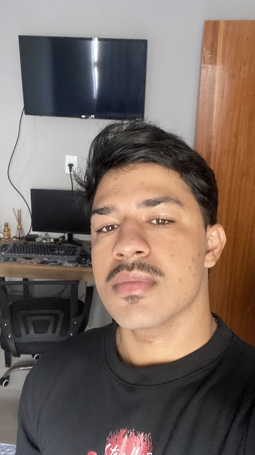

Olá, eu sou
Pablo Emanuel
Estudante de ADS · Técnico em Informática · Suporte de TI
Nova Serrana, MG
Sobre mim
Formação Acadêmica
Graduando em Análise e Desenvolvimento de Sistemas (Unicesumar). No momento, mergulhado em Arquitetura de Computadores e Redes para entender como tudo funciona por baixo do capô.
Experiência Técnica
Tenho sólida bagagem em Suporte Técnico e TI. Manutenção de hardware, diagnóstico de software e configuração de redes são rotinas que domino com facilidade.
Stack em Construção
Além da faculdade, sou autodidata em HTML, CSS e JavaScript. Desenvolvo projetos práticos para consolidar a lógica de programação e criar interfaces modernas e funcionais.
Soft Skills
Sou reconhecido pela excelente oratória e facilidade no trato com o público. Sou organizado, ágil e comprometido com a segurança e confidencialidade dos dados.
Hobbies & Estratégia
Entusiasta de jogos com narrativas densas (RDR2, Assassin's Creed). Prefiro experiências cooperativas como It Takes Two e A Way Out, onde a comunicação é a chave do sucesso.
Universo Marvel
Fã declarado do MCU, com o Iron Man como personagem favorito. Admiro como a tecnologia e a engenharia são apresentadas como ferramentas para transformar o mundo.
Experiência & Trajetória
Diagnóstico de hardware/software, instalação de sistemas e apoio em design visual (Photoshop/CorelDraw).
Foco em processos produtivos de alta demanda, agilidade e controle de qualidade rigoroso.